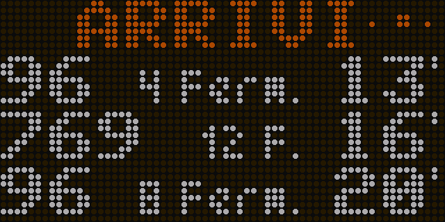
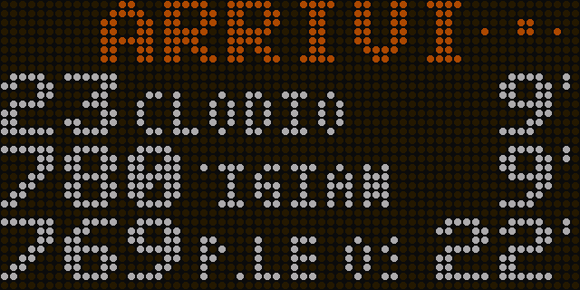
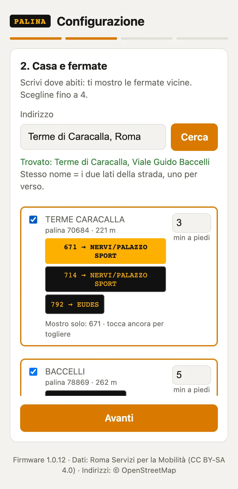

La palina che ti dice quando uscire di casa
Un piccolo tabellone luminoso, come quello della fermata, ma in casa tua.

Che cos’è la PalAIna
È un pannello con tanti puntini luminosi, da tenere in casa vicino alla porta. Ti basta uno sguardo.
-
Ti dice fra quanti minuti passa il tuo bus
Il numero grande è il tempo che manca.
-
Ti dice se è il momento di uscire
I numeri cambiano colore: capisci subito se devi muoverti.
-
Ti avvisa se ci sono scioperi, lavori o deviazioni
Così non aspetti un bus che oggi non passa.
Come si legge il pannello
Ogni riga è un autobus. Guarda queste tre parti.

- Il numero del busQui, per esempio, il 23.
- Dove vaIl nome dell’ultima fermata. Ogni tanto, al suo posto, compare quante fermate mancano.
- Fra quanti minuti arrivaQui: 9 minuti. Se vedi ORA che lampeggia, il bus sta arrivando adesso.
I colori, come un semaforo
I minuti cambiano colore, per dirti cosa fare.
- BiancoIl bus sta arrivando davvero.
- ViolaEsci adesso! Se cammini ce la fai.
- RossoOrmai non fai più in tempo.
- ArancioneÈ l’orario scritto sulla tabella. Non sappiamo ancora dov’è il bus: non correre.

Un esempio
Da casa tua alla fermata ci vogliono 6 minuti a piedi. Ecco i colori di un bus, a seconda dei minuti che mancano:
Un bus a 8, 7 o 6 minuti è viola: esci adesso. Da 5 minuti in giù è rosso: a piedi non lo prendi più.
I minuti a piedi li scegli tu quando prepari la palina. Il viola e il rosso valgono solo per i bus già per strada, non per l’arancione.
Come funziona, in tre disegni
-
I bus dicono dove sono
Ogni autobus della città manda la sua posizione. La città pubblica questi dati per tutti, in modo aperto.
-
Un computer fa i conti
Sta su internet. Calcola fra quanti minuti ogni bus arriva alla tua fermata e legge gli avvisi.
-
La palina mostra solo ciò che ti serve
Riceve poche righe già pronte e le accende sul pannello. Per questo usa pochissimo internet.
Come si mette in funzione
Serve solo un telefono. Non c’è nessuna app da scaricare.
-
La attacchi alla corrente
Il pannello si accende e scrive CONFIGURA.
-
Col telefono scegli la rete della palina
Nelle impostazioni del WiFi scegli il nome che vedi sul pannello (comincia con PALINA) e scrivi la parola d’ordine mostrata lì.
-

Scrivi dove abiti e scegli la tua fermata
Scegli anche il WiFi di casa. Poi scrivi il tuo indirizzo: vedrai le fermate vicine e tocchi la tua.
-
Fatto: ecco gli arrivi
Tocca Salva: dopo qualche secondo il pannello mostra i tuoi autobus.
Tutti i dettagli sono nel manuale.
L’intelligenza artificiale, a cosa serve
Gli avvisi della città sono scritti per le persone, non per i computer. L’intelligenza artificiale li legge come farebbe una persona.
Un avviso della città
«La linea 44 non transita in via Makallè, via Asmara e via Tripoli.»
«Non transita» vuol dire: non passa.
L’intelligenza artificiale lo legge e controlla se riguarda la tua fermata.
L’AI legge
Capisce gli avvisi e dice se riguardano la tua fermata.
Il computer calcola
Minuti, ritardi e fermate che mancano sono conti esatti, fatti con i dati ufficiali.
L’AI legge, la matematica calcola.
L’intelligenza artificiale non scrive messaggi e non inventa mai gli orari.
Le domande che ci fanno
Serve internet? E un telefono?
Sì, serve il WiFi di casa, ma ne usa pochissimo. Il telefono serve solo la prima volta, per preparare la palina: va bene un telefono qualsiasi che si colleghi a internet. Non c’è nessuna app da scaricare.
Quante fermate posso scegliere?
Fino a 4. Se due fermate hanno lo stesso nome, sono i due lati della strada: scegli quello giusto per te.
Posso usarla in più case?
Sì. Puoi preparare più gruppi di fermate, ad esempio «casa» e «nonna», e cambiare con un tocco. Anche il WiFi di un’altra casa si può aggiungere: come si fa è nel manuale.
Cosa succede se salta la corrente?
Quando la corrente torna, la palina si riaccende da sola e rimostra gli arrivi. Ricorda tutto: non devi rifare niente. Se l’avevi spenta apposta, resta spenta.
Si può usare con Alexa?
Sì, ma è facoltativo: con la voce puoi accenderla e spegnerla. Come si fa è scritto nel manuale.
Cosa fa con i miei dati?
Pochi, e solo quelli che servono. La palina tiene a mente il WiFi di casa, il tuo indirizzo e le fermate scelte. La password del WiFi resta dentro la palina e non esce mai.
Gli indirizzi che scrivi vanno al nostro computer su internet, che li cerca su OpenStreetMap, una mappa aperta a tutti, per trovare le fermate. Ne tiene una copia (il testo, il luogo trovato e la data) che non è collegata alla tua palina e non viene cancellata da sola. Il nostro computer non conosce il tuo nome e non registra quello che guardi.
I dettagli sono nel capitolo «Dati, privacy e fonti» del manuale.
Dicci cosa ne pensi
Ci regali due minuti? Vogliamo sapere quanto la pagheresti, cosa ti è piaciuto e cosa cambieresti. Puoi anche farci una domanda.
Rispondi al sondaggio (2 minuti)Si apre una pagina di Google. Non serve nessun account e le risposte sono anonime: nome ed email sono facoltativi, servono solo se vuoi che ti rispondiamo. Preferisci scrivere? el-man@el-man.it
Vuoi leggere tutto con calma?
Il manuale spiega ogni cosa, passo dopo passo.
Scarica il manuale completo (PDF, 1,0 MB)Da dove vengono i dati
- Posizione dei bus, orari, avvisi, notizie di infomobilità
- Roma Servizi per la Mobilità, dati aperti CC BY-SA 4.0
- Scioperi
- Ministero delle Infrastrutture e dei Trasporti, calendario ufficiale
- Treni (percorso bus + treno)
- ViaggiaTreno, servizio pubblico di Trenitalia
- Meteo
- Open-Meteo, CC BY 4.0
- Indirizzi e percorsi a piedi
- © OpenStreetMap contributors (routing: FOSSGIS)
- Lettura degli avvisi
- Jev, TypeSafe AI
La PalAIna è un progetto indipendente di Elettronica Mangione, non affiliato ad ATAC né a Roma Servizi per la Mobilità. Gli orari sono previsioni: in caso di dubbio fanno fede le informazioni ufficiali.